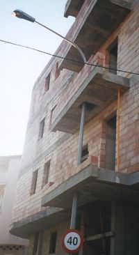
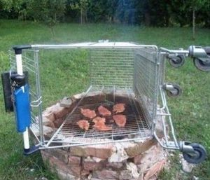
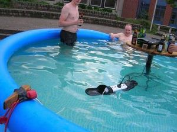

Chapuza
 De: La Frikipedia, la enciclopedia extremadamente seria.
De: La Frikipedia, la enciclopedia extremadamente seria.
 Descripción gráfica de chapuza
«¿Quien ha hecho esta chapuza?»
~ Chapucero contemplando una chapuza sin recordar que fue él quien la hizo.
Termino típicamente ejpañol para denominar una obra maestra a menudo creada por la genialidad propia de cualquier piso de estudiantes, un jubilado, o un grupo de albañiles. Algunos consideran las chapuzas un trabajo hecho sin recursos y/o sin ganas y algo de lo que avergonzarse, pero eso es porque no entienden la delicada belleza del folclore de este país.
Etimología
Según la teoría mas aceptada la palabra chapuza no es mas que una forma despectiva de la palabra chapa, refiriéndose a la chapa que te pega un autentico profesional al descubrir que has realizado un trabajo infame. Según otra teoría, proviene de la palabra chapotear, por los chapoteos que pegas cuando un chapuzas te arregla las cañerías del agua.
Cómo hacer una chapuza
Uno de los procedimientos más usuales para hacer una chapuza es arreglar algo. Si ya ha sido arreglado con anterioridad el convenio del sindicato de chapuceros te obliga a decir en voz alta y con tono de encabronamiento:
¿Quien ha hecho esta chapuza?
Más te vale no omitir este ritual porque se trata de un gremio muy tradicional y vengativo capaz de borrarte la partida de pokémon. A continuación debes tratar de realizar un arreglo complejo sirviéndote únicamente de materiales como: chicles, gomas de pollo, clips, cello, plastilina, pinzas para el pelo, un cacho de alambre, superglue, gomina (en serio, hay gente que arregla cosas con esto), un trozo de manguera, un clavo (y nunca mas de uno), papel de periódico, papel del culo, cola en barra, un rinoceronte, un cacho de trapo y un larguísimo etc. Si se trata de un aparato electrónico no olvides dejarte dentro un objeto valioso tal como un reloj o un anillo vibrador antes de cerrarlo con cello o tornillos de una medida inapropiada para que el próximo que trate de arreglarlo pueda exclamar: ¿quien ha hecho esta chapuza?.
Otra modalidad de chapuza muy popular entre lo universitarios y los domingueros es suplir la falta de electrodomésticos o de herramientas con elementos de dudosa o incluso impensable utilidad para tales fines. Ej: cocinar con una plancha de ropa, planchar la ropa con una plancha para el pelo, plancharse el pelo con una plancha para cocinar...
Grandes chapuceros de ayer y hoy
Chapuzas famosas
- La constitución ejpañola.
- La adaptación cinematográfica de Silent Hill.
- El avión de la película El vuelo del Phoenix.
- El final de Los Serrano.
- El final de Lost.
- El final de One Piece (cuando la terminen).
- Parir a Belén Esteban.
- La
tocha rinoplastia de Belén Esteban.
- Las tácticas del Real Mandril.
- El mito del creacionismo.
- La teoría de cuerdas.
- El final de El internado.
- Windows vista
- Telecinco
- La capilla sixtina
- Toguepi
- La Wikipedia
- La guerra de Irak
- El emulador de la NES
- Producir una colección de tazos de Chiquito de la Calzada.
- El monstruo de Frankenstein
- Una critica culinaria escrita sin usar la E pero que después resulta contener palabras como pagueti y cloqueta y repite joróbate Flanders una y otra y otra y otra vez.
- El relleno de Naruto.
- Las servilletas de papel de los bares.
chapuzas típicas
 Los domingueros son grandes autores de chapuzas.
 Por mucho que mires la foto deseando que se queden tiesos, nunca sucedera...
- Hacer una pizza en el microondas.
- Rodar una película en Ejpaña.
- Pintar la pared sin retirar muebles ni cuadros.
- Arreglar el ordenador.
- Arreglar la cadena del váter.
- Echar la quiniela.
- Hacer un cosplay de Naruto.
- Cualquier producto de un todo a cien chino.
- Echar gasolina a una hoguera (con la hilarante variable de que el bidón te explote en las manos
por gilipollas).
- Crear artículos como este.
- Una pobre scooter
desgraciada tuneada por un cani.
- Arreglar cualquier aparato. ¡En la sociedad del consumo cuando un aparato se rompe se tira y se compra otro nuevo, burro!
- Crear una ideología de derechas.
- Hacerse un colacao con agua en lugar de leche.
- Crear una ideología de izquierdas.
- Dejar a tu pareja por email.
- La ensaladilla rusa de cualquier chiringuito de playa.
- Intentar dominar todo el area de los 3 estados.
- Hacerse una cuenta en youtube indicando que eres menor de edad.
- Depilarse el escroto con alcohol y un mechero.
- Poner un examen tipo test en el que casi todas las respuestas correctas son la A.
- Arreglar la instalación del gas sirviéndose de cola en barra y chicles usados.
- Hacer un cosplay de pyramid head siendo un enclenque.
- Limpiar una herida con colonia.
- Canalizar el gas con los tubos de cartón de los rollos de papel de cocina.
- Teñirse el pelo de rubio y dejarse las cejas morenas.
- Pescar con dinamita.
- Hacer un episodio recopilatorio.
Autor(es):
- Benito Camela Morcilla
- Shadowmura
- Generibot
- Fdecus
- Rrvvss
Frikipedia 2005-2016, Licencia
GFDL 1.2 - Extraído por FrikiLeaks